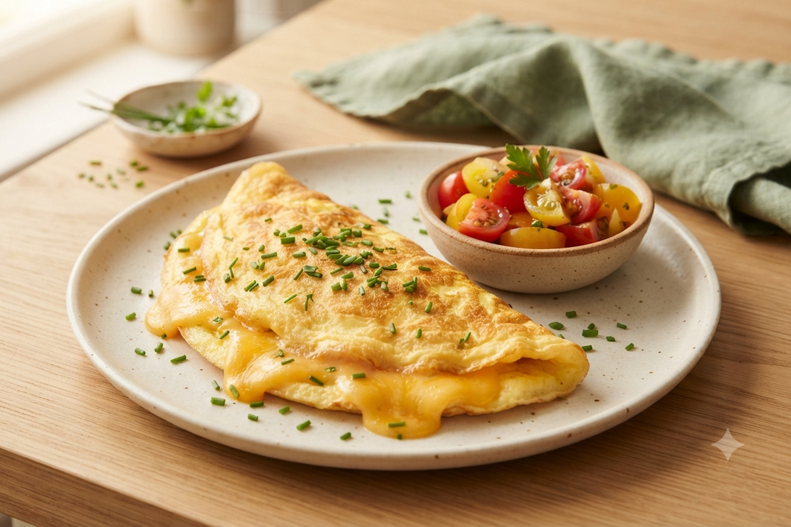

Omelete Recheada
Rápida, prática e recheada do seu jeito. A omelete perfeita pra quando a fome aperta e o tempo é curto — mas ninguém precisa saber que levou só 15 minutos.
- Tempo de preparo: 15 minutos
- Rendimento: 2 porções
- Dificuldade: Fácil
Ingredientes
Modo de Preparo
Veja também: Está com pressa?